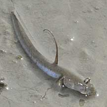
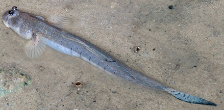
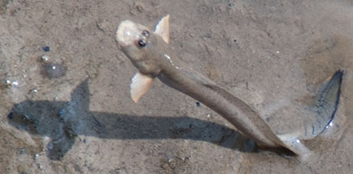
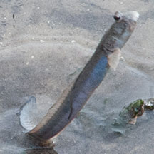
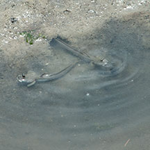
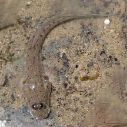

|
|
| fishes text index | photo index |
| Phylum Chordata > Subphylum Vertebrate > fishes > Family Gobiidae > mudskippers |
| Bearded
mudskipper Scartelaos histophorus Family Gobiidae updated Sep 2020 Where seen? This long leaping mudskipper has so far only be seen at Pasir Ris and Chek Jawa. Its preferred habitat is soft liquid mud where it often squirms rapidly in a snake-like manner. According to FishBase it is intertidal and found on sand and mud flats along bay shores. Also in estuarine areas, swamps, marshy areas and on tidal mud flats. It actively shuttles back and forth between rock pools and air. Features: To about 14cm long, those seen about 7-10cm. Scales are tiny and partly embedded and thus not visible with the naked eye. The skin on the top of the head and on the back is full of blood vessels allowing the fish to respire through the skin. The first dorsal fin is tall and mast-like. Tail fin quite large and long. |
 Tall mast-like dorsal fin raised when creeping. Chek Jawa, Dec 09 |
 Pasir Ris Park, Jul 09 |
 When leaping, second dorsal fin is raised, but tall first dorsal fin is not. Chek Jawa, Apr 12 |
 'Stands' on its tail when it leaps.. Chek Jawa, Dec 09 |
|
| Leaping lovers: The fish does display its tall mast-like dorsal fin when it is creeping about on the ground. But the spectacular behavious is when it leaps 'on the spot', hurling itself almost vertically and for a brief moment, standing on its tail! This is believed to be part of the courtship ritual of the male mudskipper! As it leaps, it spreads out its pectoral fins, and its second dorsal fin. The tall, mast-like first dorsal fin is not raised when leaping. One fish has also been seen raising its tail fin, first and second dorsal fin when horizontal, next to another fish. |
 A pair emerging from a narrow burrow that opens sideways into a pool. Chek Jawa, Mar 11 |
||
| Burrowing behaviour: It appears to build a burrow that opens sideways into a pool of water. What does it eat? It eats tiny bottom dwelling creatures such as diatoms, ostracods, copepods and worms. |
| Bearded mudskippers on Singapore shores |
On wildsingapore
flickr
|
| Other sightings on Singapore shores |
 Pasir Ris Mangrove Boardwalk, Dec 25 Photo shared by Rui Quan Oh on facebook. |
Links
|